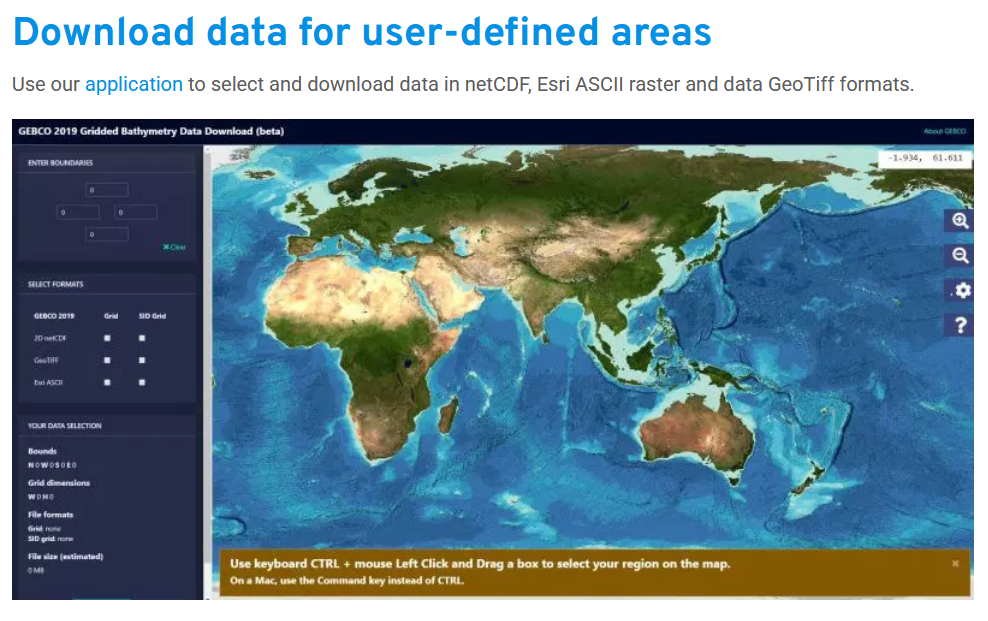
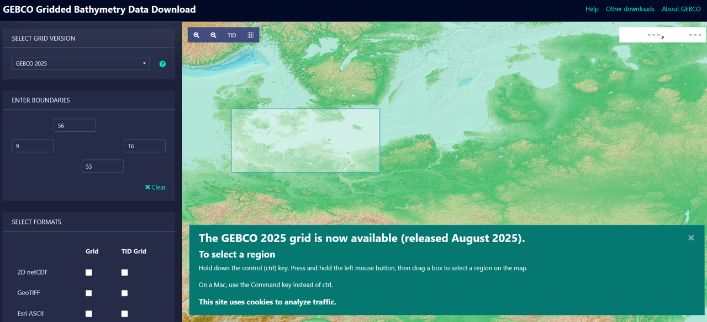
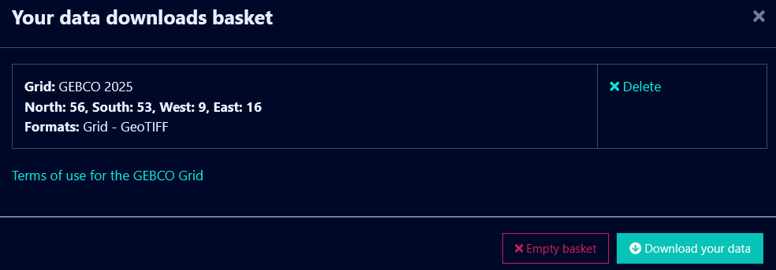
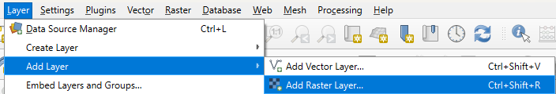
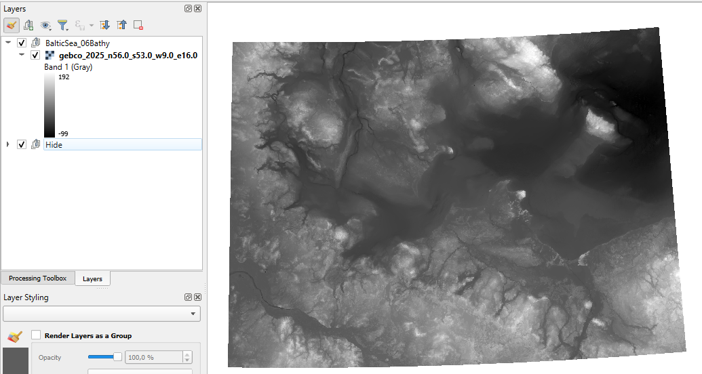
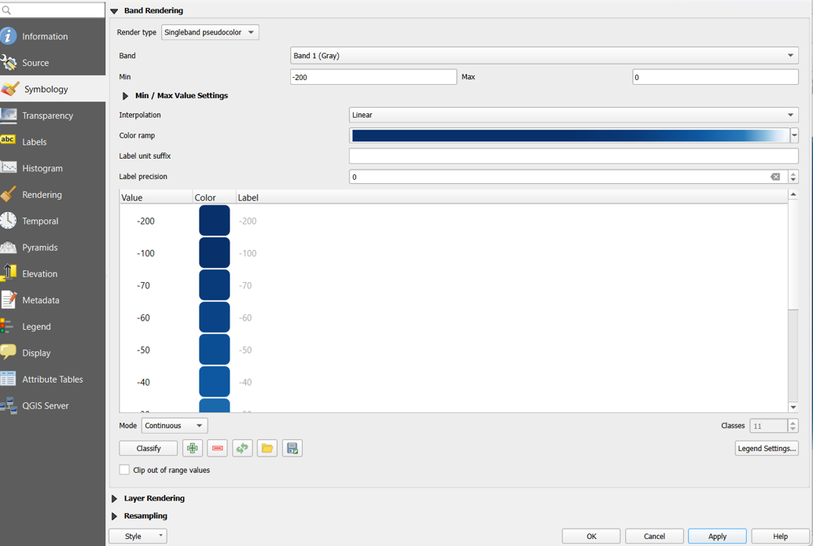
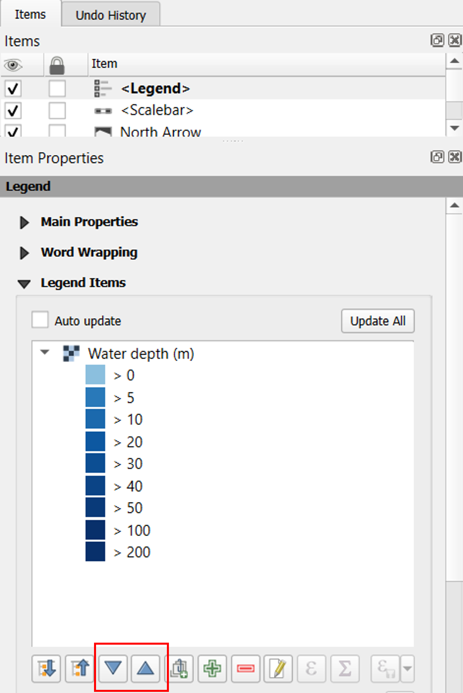
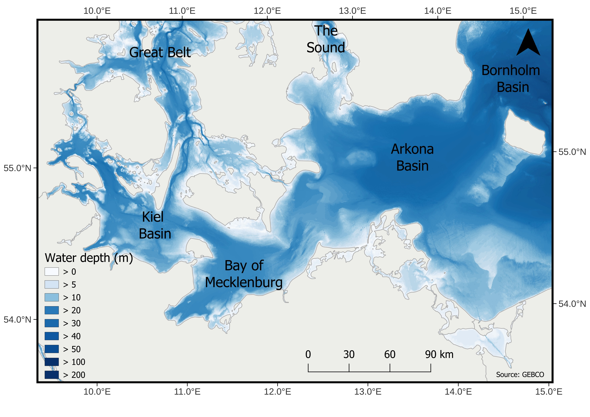

Add raster in QGIS
In this blog post, we’ll explore add a raster layer with the example of bathymetry data in QGIS.
Intro
In this blog post, we will explore how to add a raster layer in QGIS using bathymetry data as an example.
You will learn how to visualize raster data, adjust its appearance, and integrate it into your map.
Download
To download the bathymetry data, we will use GEBCO (General Bathymetric Chart of the Oceans), which provides global bathymetry information describing the depth and shape of the ocean floor.
To download the dataset, visit the GEBCO website and follow these steps:
- Go to Download data for user-defined areas
- Click on Application to open the data selection tool
- Select your area of interest and download the dataset for use in QGIS

Afterwards,
- Add the coordinates for the area you want to download. In this example, I use 9 to 16 (longitude) and 56 to 53 (latitude).
- Select GeoTIFF as the output format for the dataset.

Finally,
- Click Add to Basket, then proceed to Download to obtain the dataset.

QGIS
To add your downloaded bathymetry data in QGIS:
- Go to the menu: Layer > Add Layer > Add Raster Layer
- Browse to the downloaded GeoTIFF file and click Open
- Select the downloaded bathymetry file from your folder.
In this example, the file name starts with “gebco”.

The bathymetry raster will appear in your map canvas. - When first loaded, the raster will appear in grey tones, which is the default color rendering in QGIS.

Shades of blue
To better visualize the bathymetry data, you can change the color scheme from grey to shades of blue:
- Right-click the raster layer and select Properties.
- Go to the Symbology tab.
- Set Render type to Singleband pseudocolor.
- Adjust the value range to focus on water depth: Minimum: -200; Maximum: 0
- Choose Interpolation: Linear
- Select a Color ramp: Blues. If needed, click the color ramp and invert it to have deeper areas darker.
- Set Mode to Continuous
- Click Classify to apply the color scheme. You can further adapt the classes and categories as needed.
Your raster will now display in shades of blue, clearly showing variations in water depth.

Layout
To prepare your map for export with a legend:
- Go to Project > Layout Manager and create a new layout.
- Once the layout opens, add a legend: Add Item > Add Legend.
In the Legend Items panel:
- Deselect all other layers and keep only the bathymetry layer selected.
- Uncheck Auto-update so the legend doesn’t change automatically.
- Use the arrows to reorder the legend entries if needed.
- Double-click a legend entry to edit its label. For example, change it to “>0” if appropriate.
This ensures your legend accurately represents the bathymetry layer and is neatly organized for your final map.

To highlight specific locations on the map, add text labels for areas of interest.
- The names and locations were extracted from the study: Copernicus Open Access Journal.
- You can add these labels in the layout by using Add Item > Add Label and positioning them appropriately on the map.
Final map
Here is the completed map, showing:
- Water depth visualized in shades of blue
- A legend indicating the depth values
- Labels for specific basins of interest

For details on the land shapefile, coordinates, scale, and other annotations, please refer to the previous posts.
The design and layout of this map were inspired by the following publication: Bathymetric properties of the Baltic Sea.